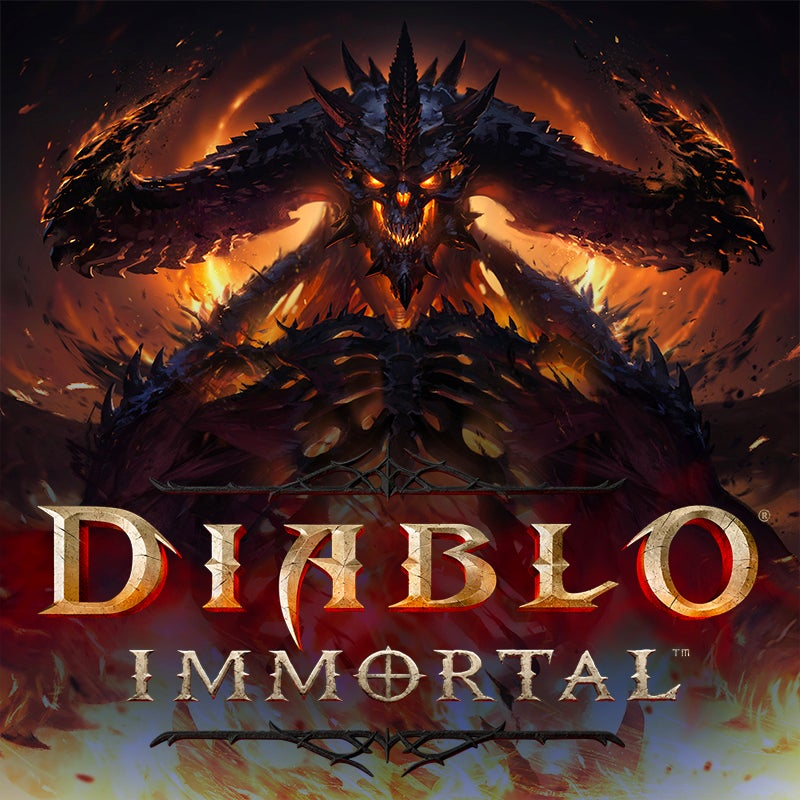

Game Development and MicroTransactions
Posted on: July 19, 2024
Free-to-play but microtransactions. Oh, it's free? Hooray! Let me play! Wait what? I have to pay to unlock/beat this level/player/area? Nah.
This is what most players go through nowadays. And I don't just mean mobile. It's crept into PC games too! But not console games as much ... yet
Here's how it works. You recruit a bunch of developers, designers, product managers, scrum masters, devops engineers etc etc. You build your game. You tell your staff "This is going to be FTP but with microtransactions!". Immediately, your teams are like "Great. Another one of those". So you spend millions of dollars paying your developers and designers and product managers and ... in fact, everything looks great. The graphics are there, the sound effects are nice, the mechanics are smooth. You launch your game and you get hundreds of thousands of players. But none of them are paying a dime for your content. As they should, because you never asked them to explicitly. They don't owe you anything because that's what your product is. Or, some of them do pay microtransactions because, well, they do. But at the end of the day, what are you left with? Big red numbers with investors and stockholders breathing down your neck. You're gonna shutdown pretty soon.
Don't get me wrong, this model has worked for many games in the past. Diablo Immortal (of course I start with the most unfamous one), a bazillion Korean MMOs, League of Legends, whatnot. But people have started to catch on. And they're getting tired of it.
A Question of Accountability
And there's a reason why. Why do you think Japanese console games are making a killing, while North American FTP MMO games are all crying and dying? People want quality. They want reliable, quality content. And back in the day, that had to be completely established. During the entirety of design and development phase, that was in the back of the mind of every single person involved. This thing makes or breaks depending on how well I do in my job. Not because of chance, not in the hopes of catching those few whales our there. All of us are accountable for the final product, because people are going to pay to experience them.
Fog of uncertainty
Microtransactions are a form of gambling. And so is the development of them. You either make or break. You either attract whales or you dont. But here's the problem: whales usually don't care if the game is well-polished or not. They are geared toward one thing and one thing only: reward and the need to come ahead using money.
You can make the most incredible game you want, as soon as you make it free-to-play with microtransactions, its intrinsic value drops to 0. You can hire the most talented developers, engineers, designers, product managers, as soon as you make them "Free To Play", your game is now labelled as worthless unless. Business in itself is a gamble enough. Why add another level of gambling ontop of that? You pay millions toward the most talented developers to ... gamble on your final product?
It's time to stop. Microtransactions are a niche. (Most) Games were not, are not, and will not work with this model. Investors and heads of game dev companies need to get this hammered into their heads. This is absurdity at its best. The time for free-to-plau microtransactions is gone! Gamers want quality, reliable experience. WAKE UP.